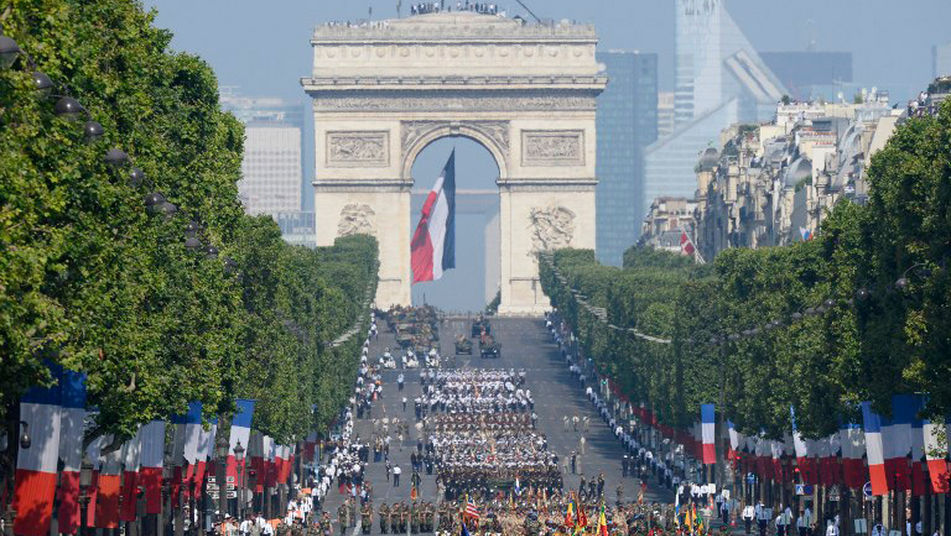

Una ciudad para soñar
El clima de París es oceánico semicontinental (también denominado «clima de transición») al encontrarse alejada de la costa. Las precipitaciones son algo abundantes aunque no excesivas, con una media de aproximadamente 636 mm y están repartidas a lo largo de todo el año de forma regular sin tener un destacado mínimo pluviométrico (es decir, una estación seca).
Las temperaturas en verano pueden superar los 30 °C ocasionalmente, aunque rara vez se superan los 35 °C; las temperaturas máximas suelen rondar entre los 25 °C y 30 °C y son frecuentes las tormentas. La primavera y el primer mes del otoño son suaves, con abundantes días de lluvia. Durante gran parte del otoño y en todo el invierno reina el frío.
En algunos meses (sobre todo en diciembre, enero y febrero) el frío se da de manera intensa, con temperaturas que apenas superan los 7 grados de máxima y mínimas que muchas veces no llegan a 0 grados.
La estación de otoño en Francia inicia el 21 de septiembre, pasa por los meses de octubre, noviembre y culmina el 21 de diciembre.
El otoño es una época ideal para visitar a Francia, porque se realizan las mejores actividades al aire libre y permite disfrutar de los atractivos turísticos acompañado de un clima fresco y agradable. Además es la temporada de cosecha de la uva y otras festividades en todo el país.
A inicios de la estación de otoño, en septiembre aun se percibe en el ambiente el calor residual del verano, lo que provoca que el clima se torna fresco y agradable. Sin embargo con el pasar de las fechas, las temperaturas empiezan a descender causando vientos constantes y lluvias ocasionales. La temperatura media durante el otoño en Francia es de 7ºC a 15ºC.
Al principio de la temporada de otoño en Francia, el ambiente es cálido y fresco a la vez, sin embargo al pasar los meses, la temperatura decae y los vientos fríos empiezan aparecer.
Durante el mes de septiembre: Temperatura mínima 13ºC (55ºF) / Temperatura máxima 21º C (70º F)
Durante el mes de octubre: Temperatura mínima 10º C (50º F) / Temperatura máxima 18º C (64º F)
Durante el mes de noviembre: Temperatura mínima 3º C (7º F) , Temperatura máxima 7º C (44º F)
Durante el mes de diciembre: Temperatura mínima 2º C (36º F) / Temperatura máxima de 5,0° C (41° F)
Los mercados de navidad es una feria tradicional en Francia celebrada a puertas de la navidad. Los mercados de navidad suelen abrir en el mes de noviembre o diciembre y quedarse hasta diciembre o enero. En esta feria navideña se se pueden encontrar ardonos, arboles y regalos para la ocasión, además de pistas de patinaje y ambientes temáticos de navidad.
La época de invierno en Francia empieza desde el 21 de diciembre hasta el 21 de marzo.
El invierno es un buen momento para visitar a Francia, a pesar del frío invernal típico de la época. Las tarifas aéreas son más baratas casi toda la temporada y los deportes de invierno, fiestas y ferias de Navidad enriquecen la experiencia de sus visitantes.
El tiempo durante esta época oscila entre 1ºC y 7ºC. El frío se hace presente durante los 4 meses, pero en los que más se intensifica es en enero y febrero, que en muchas ocasiones presenta nieve. Ya en marzo, las temperaturas comienzan a ascender poco a poco, para dar paso a la primavera.
En el invierno las temperaturas son bastante bajas e irregulares. Durante las primeras fechas, los días pueden ser nítidos y claros o bien invernales con tormentas y ventiscas.
Durante el mes de diciembre: Temperatura mínima 2 °C (36 °F) / Temperatura máxima de 7 °C (45 °F)
Durante el mes de enero: Temperatura mínima 2 °C (35,6 °F) / Temperatura máxima de 6 °C (42,8 °F)
Durante el mes de febrero: Temperatura mínima -3 °C (35,6 °F) / Temperatura máxima de 8 °C (46,4 °F)
Durante el mes de marzo: Temperatura mínima 5 °C (41 °F) / Temperatura máxima 11 °C (51,8 grados °F)
Las navidades en Francia se celebran con mucha alegría. Desde inicios de diciembre las personas decoran sus hogares con adornos navideños. Durante la Nochebuena realizan una misa llamada Messe de Minuit, que es seguida por un gran festín llamado Le Réveillon, que simboliza el despertar de Jesús en su nacimiento.
La temporada de primavera en Francia comienza entre el 20 y 21 de marzo y culmina el 21 de junio.
Las ciudades de Francia durante la primavera se tornan cálidas y frescas, debido al aumento de la temperatura. La mayoría de las personas deciden disfrutar de las actividades al aire libre, visitar las Tullerías, el Jardín de Luxemburgo o celebrar las festividades mundiales como la Semana Santa.
Debido a sus diversidad geográfica, la primavera en Francia suele ser cálida durante el día y un poco fría por las noches. Las temperaturas pueden variar entre 13ºC y 20ºC grados centígrados. Con el paso de los días y ya durante el ultimo mes, el calor se va sintiendo más fuerte.
En los primeros meses es cuando se percibe más el frío invernal, sin embargo con el pasar del tiempo, las temperaturas van ascendiendo para dar paso al fresco clima de primavera.
Durante el mes de marzo:: Temperatura mínima promedio 4°C (39°F) / Temperatura máxima promedio 12°C (54°F)
Durante el mes de abril:: Temperatura mínima promedio 7°C (45°F) / Temperatura máxima promedio 16°C (61°F)
Durante el mes de mayo:: Temperatura mínima promedio 10°C (50°F) / Temperatura máxima promedio 20°C (68°F)
Durante el mes de junio:: Temperatura mínima promedio 13°C (55°F) / Temperatura máxima promedio 24°C (75°F)
La Feria de Pascua es una festividad que se celebra todos los años en el mes de marzo a pesar de que las fechas suelen variar con el pasar de los años. La feria es uno de los festejos más tradicionales de los franceses, además, suele ser celebrada a través de varios espectáculos de corrida de toros y tiende a durar aproximadamente 3 días.
La temporada de verano en Francia dura desde el 21 de junio hasta el 21 de septiembre.
Durante ésta época del año, el clima se presenta cálido pero podrás encontrarte de vez en cuando, con lluvias y vientos fríos por las tardes. Por otra parte, con el pasar de los meses, el clima irá en ascenso y el calor se intensificará.
Durante la época de verano, las temperaturas son elevadas y se registra poca humedad. Por otra parte, el clima de Francia en verano registra un promedio de 19°C a 21°C ideal para todas las personas que les gusta disfrutar de las playas y tardes de sol. Por último, ya en el mes de septiembre, finalizando el verano, los rayos de sol son mínimos, pero aún se pueden disfrutar.
Al pasar los meses, las temperaturas en la época de verano en Francia varían. Durante el primer mes, la brisa es cálida pero no exagerada, luego, a la mitad de temporada el clima asciende y al finalizar, vuelve a disminuir.
Durante el mes de junio: Temperatura mínima 13°C (55°F) / Temperatura máxima de 24°C (75°F)
Durante el mes de julio: Temperatura mínima 15°C (59°F) / Temperatura máxima 25°C (77°F)
Durante el mes de agosto: Temperatura mínima 15°C (59°F) / Temperatura máxima 25°C (77°F)
Durante el mes de septiembre: Temperatura mínima 12°C (54°F) / Temperatura máxima 22°C (72°F)
El tradicional día de la Bastilla es la fiesta nacional de Francia celebrada el 14 de julio de todos los años desde 1789 cuando se toma la fortaleza medieval conocida como la bastilla por parte de más de 45.000 personas cansadas de la tiranía y el despotismo de la monarquía.
